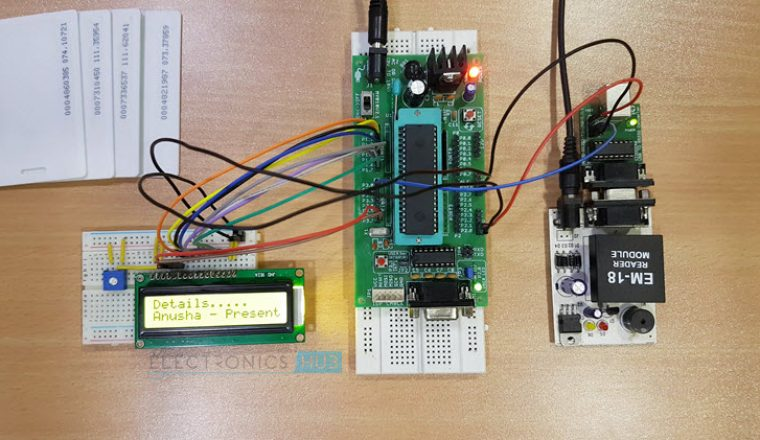

Our project consists of an RFID based attendance system that allows for automatic attendance marking by using RFID tags. Every student is provided with a unique authorization tag/card that is used to record his/her attendance. A lot of time is wasted in schools and colleges for manual attendance procedures, in such cases our system provides an instant and automated attendance marking system. Every authorized student is provided with a unique RFID tag/card with his/her details fed in it. The tag consists of a built in integrated circuit that stores this data through modulating and demodulating transmitted radio frequency signals. The data thus stored in this card is the unique identification of that person. As soon as the card is placed in front of the RFID reader, the data in it is read and attendance for that student is registered. This is done with the help of an 8051 microcontroller interfaced with the reader. If it is a registered student, then a confirmation is displayed on an LCD screen, else a rejection message is shown that denies the attendance. All student attendance status can be later obtained from the system when the status button interfaced with the microcontroller is pressed. This saves a lot of time and effort in student attendance registration. This system can later be further improved by adding attendance sms to parents or using biometric attendance systems.
